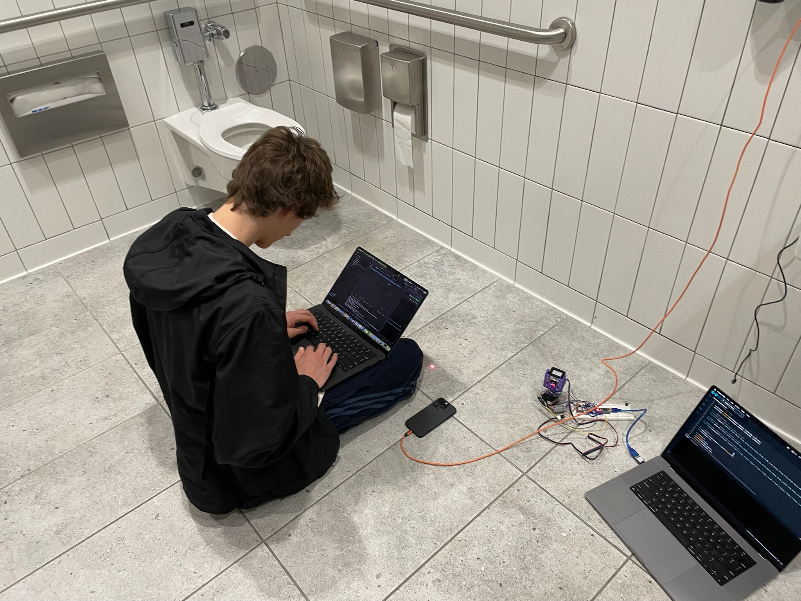
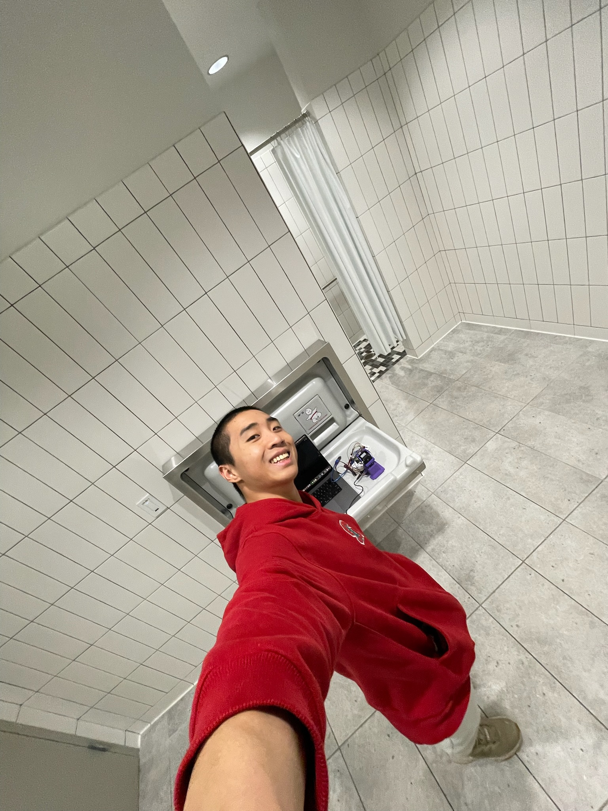
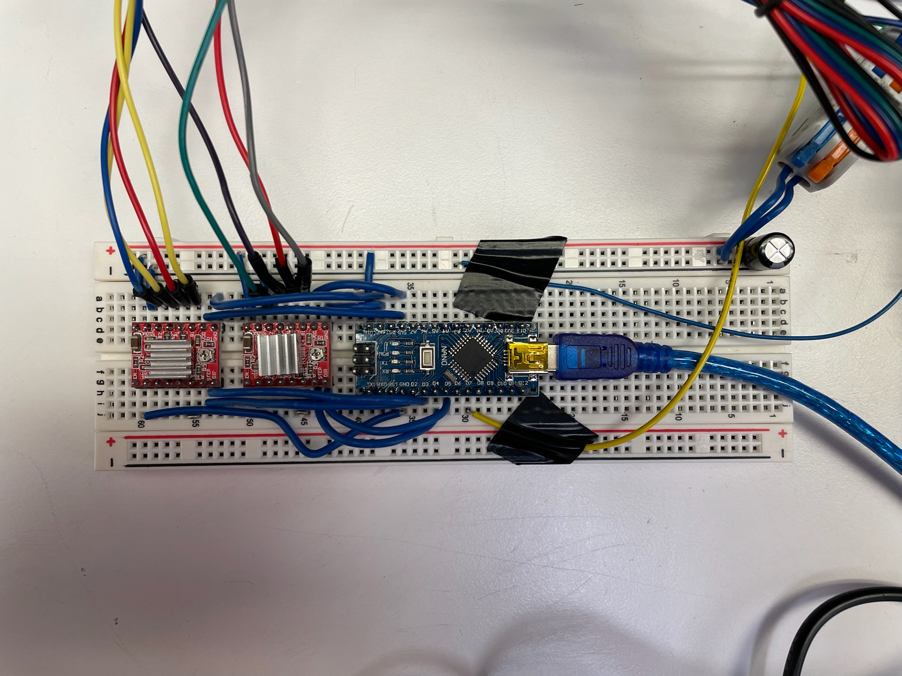
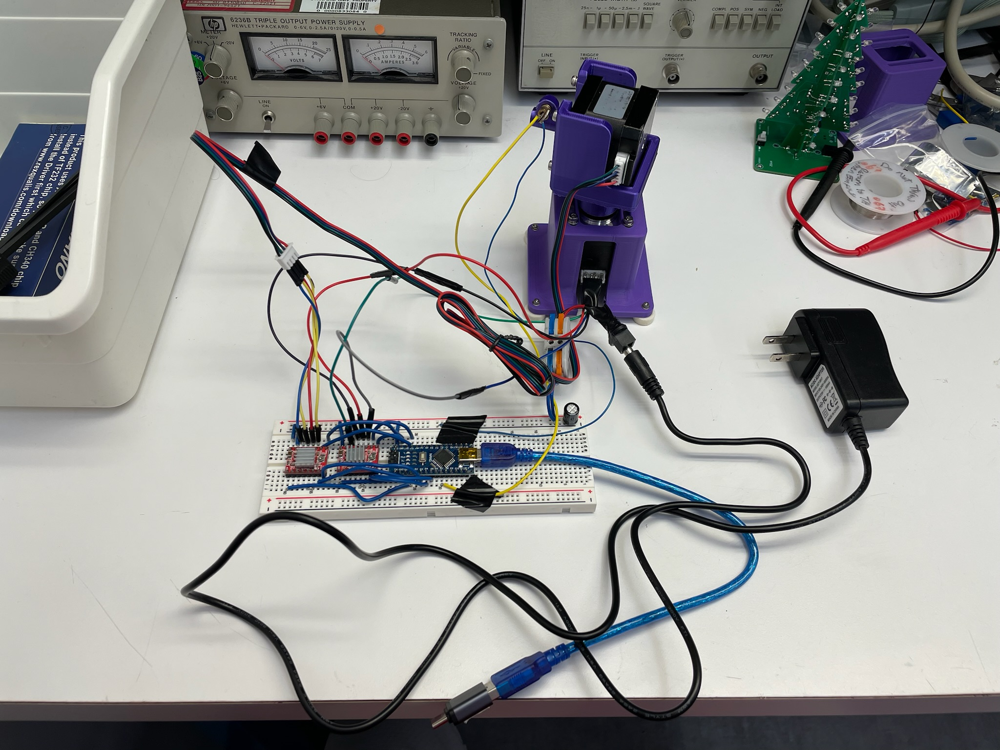
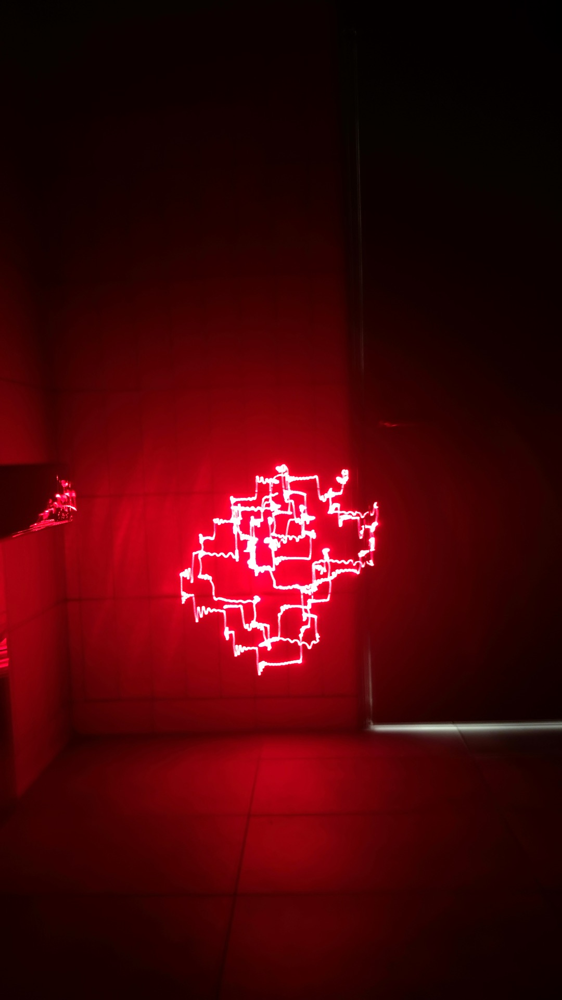
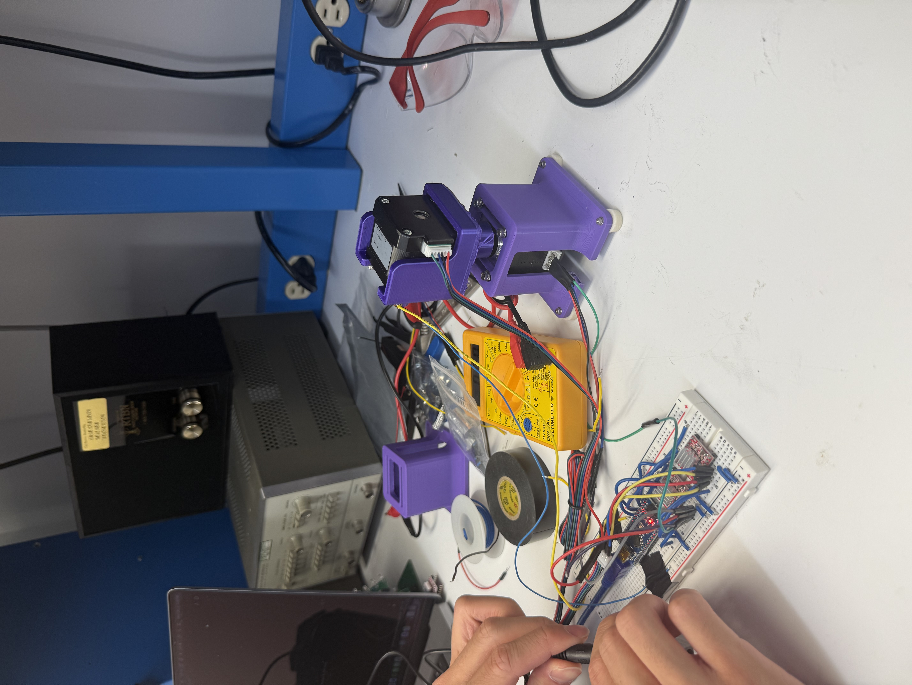
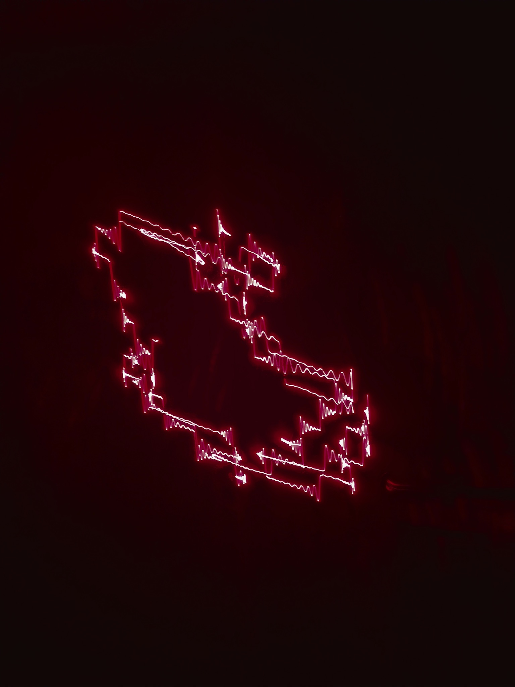
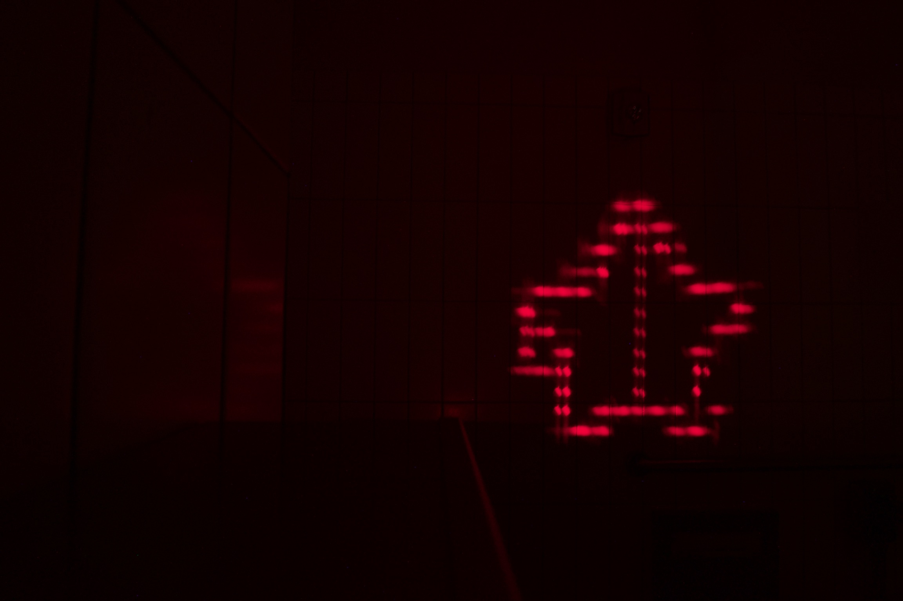
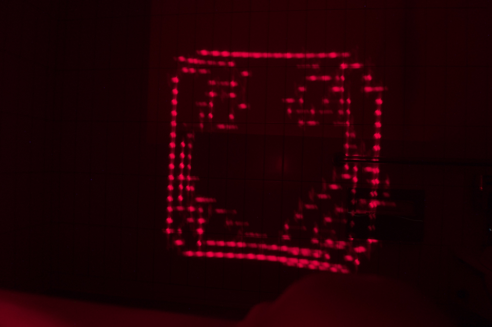

A machine that creates light paintings automatically. Built with a partner for EE14N, this project combines 3D-printed hardware, Arduino-controlled lasers, and Python software that interprets images and converts them into stepper motor coordinates.
How it works
- Python script takes an input image and processes it into coordinate paths
- Coordinates are sent to an Arduino controlling stepper motors
- Motors move a laser pointer to trace the image in 3D space
- Long-exposure photography captures the laser path as a light painting
Tech stack
Arduino
Python
Stepper Motors
Lasers
3D Printing
📁 View code on GitHub →
Photos








